O verdadeiro poder do casamento está no que vocês constroem juntos.
Não importa se vocês estão tentando reconstruir ou se já vivem um bom casamento. Aqui, cada casal encontra ferramentas, direção e acompanhamento para construir algo ainda mais forte juntos.
Por onde tudo começa
Todo casamento tem um próximo nível.
Tem casal vivendo uma fase incrível. Tem casal que percebeu que precisa cuidar melhor de algumas áreas. E tem casal que chegou até aqui porque não quer desistir.
O Poder do Casamento é para todos eles.
Vocês construíram uma história juntos e querem continuar crescendo sem deixar o casamento para depois.
A vida mudou, vocês mudaram, e perceberam que precisam se conhecer de novo nessa nova fase.
Vocês se amam, mas sabem que existem áreas do relacionamento que ainda podem amadurecer.
Existem conversas, sonhos e planos que vocês querem voltar a dividir um com o outro.
Vocês estão vivendo um momento difícil e decidiram que essa história merece ser cuidada.
Não existe casamento perfeito.
Existe casamento que continua sendo construído.
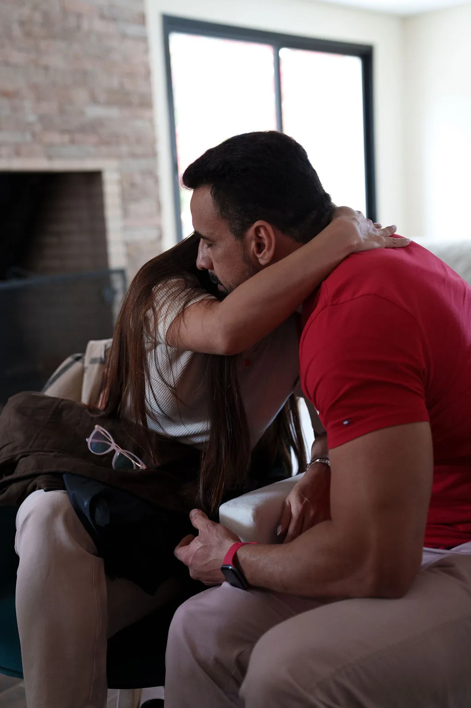
O que Deus uniu, o inferno não separa.
Marcos 10.9 · a frase que abre todo retiro
O Método Inquebrável
Três fases, sempre na mesma ordem
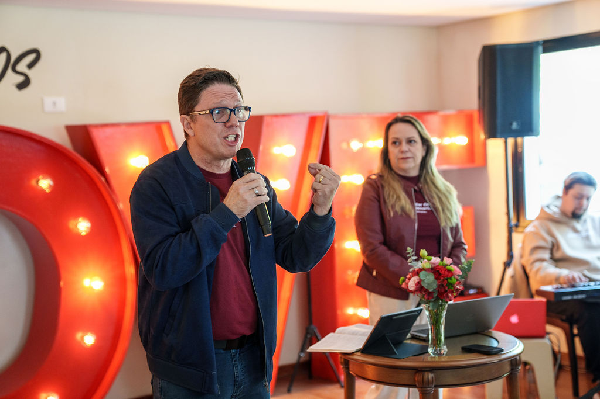
Quase todo mundo nesse mercado oferece palestra, dinâmica e oração, e cada evento é uma colcha de retalhos diferente. Aqui existe um caminho com nome, com ordem e com fim. O mesmo no curso, na terapia, no retiro e no Círculo. O que muda de um para o outro é a profundidade e o tempo que a gente tem com vocês.
Diagnóstico
Antes de consertar, entender. O que quebrou, quando quebrou e qual dos dois parou de tentar primeiro. Muito casal discute o mesmo sintoma por dez anos e nunca chega na causa.
Reconstrução
Cura das feridas antigas, perdão de verdade, a volta da conversa e a volta da intimidade. É a parte que dói e é a parte que muda tudo.
Blindagem
O que vocês vão fazer na próxima crise, combinado antes de ela chegar. Casamento inquebrável não é casamento sem crise. É o casamento que já sabe o que fazer quando ela vem.
A base é bíblica e o trabalho é sério. A gente usa a Palavra como fundamento, pesquisa de referência em relacionamento e terapia de casal conduzida por psicólogo. Esses cuidados se complementam, sem substituir um ao outro.
Os caminhos
Casamentos extraordinários continuam sendo construídos.
Por isso, criamos diferentes caminhos para acompanhar vocês em cada fase da vida a dois.
Casamento Inquebrável Online
Sete módulos para assistir juntos, no sofá de casa, começando hoje à noite. O método inteiro, na ordem.
Protocolo Aliança
Terapia de casal online com psicólogo especializado, para quem precisa de atendimento dedicado e não só de conteúdo.
Retiro Poder do Casamento
Três dias em Campos do Jordão, de quinta a sábado, com no máximo 16 casais. O lugar onde a maior parte das histórias vira.
Círculo da Aliança
Um ano inteiro de formação, acompanhamento terapêutico semanal e uma sala de casais que não muda de gente.
O livro Inquebrável
Pela Buzz Editora, em novembro. O método e as histórias que deram origem a ele, em formato de leitura.
Lidera uma igreja ou um ministério de casais? Existe um caminho próprio para você. Leve o método para a sua igreja →
Quem conduz
Pastor Lucas Albuquerque
Pastor fundador da Igreja Simples Alphaville, em Barueri, e autor de Inquebrável, que sai pela Buzz Editora. Atende casais há anos, dentro e fora da igreja, e conduz pessoalmente cada edição do retiro em Campos do Jordão.
Antes do ministério, passou uma década em comunicação e marketing. Foi head de comunicação do Governo do Estado de São Paulo e estrategista de grandes artistas e marcas. Escreve e fala sobre casamento do mesmo jeito que atende, sem floreio e sem vender ilusão.
Ele não conduz sozinho. O Pr. Valmor e a Sandra caminham junto com os casais, e o acompanhamento terapêutico fica com psicólogo especializado em casal.
Em Alphaville
Noite de Casais
Uma noite por mês, num restaurante de Alphaville, para casais que querem uma saída diferente a dois. Tem uma palestra curta, tem jantar e tem um momento divertido entre os casais. Sem compromisso nenhum com o que vem depois.
Quem vai costuma trazer outro casal da rua, do trabalho ou da família. É a forma mais leve de conhecer o movimento antes de dar o próximo passo.
Próximas turmas do retiro
5 a 7 de novembro.
3 a 5 de dezembro.
São as duas últimas edições de 2026, cada uma com no máximo 16 casais. Quando lota, a próxima é só daqui a dois meses.
Três dias na serra, e vocês voltam diferentes.
De quinta à tarde até sábado ao meio-dia, em Campos do Jordão, com no máximo 16 casais. Sem filhos, sem trabalho, sem celular tocando. A única tarefa de vocês no mundo por três dias é olhar um para o outro.
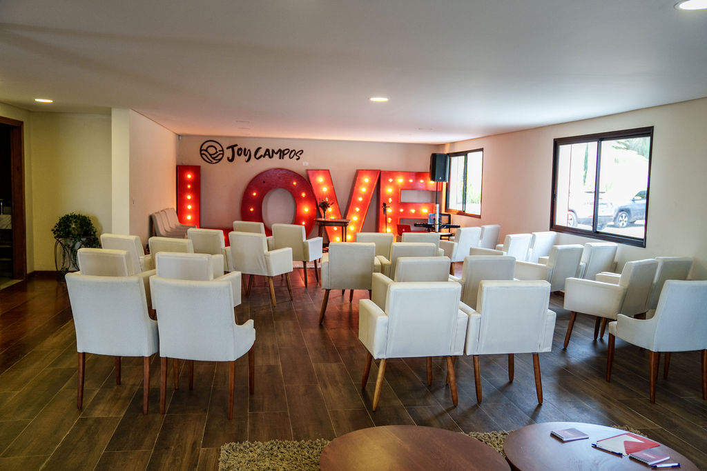
do Casamento
Por que aqui e não em casa
Vocês já tentaram conversar. E em casa nunca dá certo.
Em casa tem filho batendo na porta, celular tocando, cansaço acumulado e a mesma cadeira onde a última discussão aconteceu. A conversa importante sempre fica para o fim de semana que vem, e o fim de semana que vem sempre tem outro compromisso.
O retiro tira vocês dois do meio disso e coloca num lugar bonito na serra, com uma equipe cuidando de cada detalhe, alguém conduzindo a conversa e mais quinze casais fazendo o mesmo caminho ao lado. É por isso que em três dias acontece o que não aconteceu em três anos.
Se vocês estão evitando a conversa difícil há meses, ela não vai acontecer sozinha. Ela precisa de lugar marcado, hora marcada e alguém conduzindo.
Se a mágoa é antiga, ela não sai numa noite de conversa. Sai com processo, e processo precisa de tempo seguido.
Se um dos dois já desistiu por dentro, é muito difícil o outro trazer de volta sozinho.
E se está tudo bem, esse é o melhor momento possível para vir. Casal que chega inteiro sai muito mais forte do que casal que chega no limite.
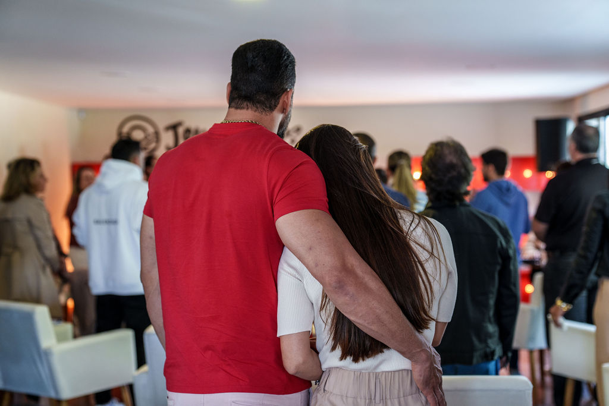
Os três dias
A gente não conta tudo aqui.
Metade do que acontece é surpresa.
Cada encontro tem um objetivo, um texto bíblico e uma atividade que o casal faz junto logo depois. Nada é improviso. Mas o que faz o retiro funcionar é vocês não saberem o que vem, então o que a gente descreve aqui é só o formato.
A chegada
Vocês chegam no meio da tarde, largam as malas e são recebidos para um café, com a equipe acolhendo cada casal pelo nome. À noite a gente começa de verdade, e a partir dali o celular some sozinho.
A primeira noite termina com uma mensagem que cada um escreve para o outro e entrega lacrada. Só vai ser aberta no sábado.
Termina tarde, e ninguém quer ir dormirO dia longo
É o dia em que a maioria chora. De manhã a gente mexe no que ninguém mexe em casa. À tarde vocês vão para lugares separados e depois voltam para a mesma sala, e essa é uma das partes mais comentadas de todas as edições.
À noite tem celebração, tem música ao vivo e tem um momento que a gente prefere não descrever aqui. Quem já foi entende por quê.
O dia que vira a chaveO novo começo
De manhã vocês escrevem os próximos dez anos do casamento de vocês, com alvo, data e letra de vocês dois.
Depois acontece a cerimônia de renovação de votos, e é nela que vocês finalmente leem o que escreveram um para o outro na quinta. Ao meio-dia vocês pegam a estrada de volta. Não voltam do mesmo jeito.
A foto que fica na parede de casaO retiro por dentro
Três dias que eles contam
pro resto da vida
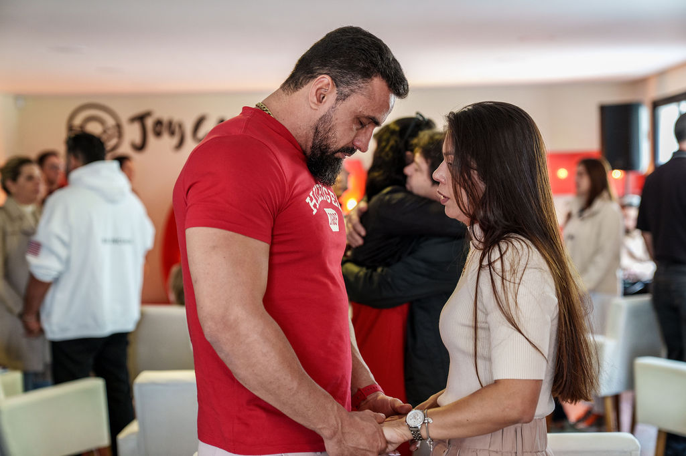
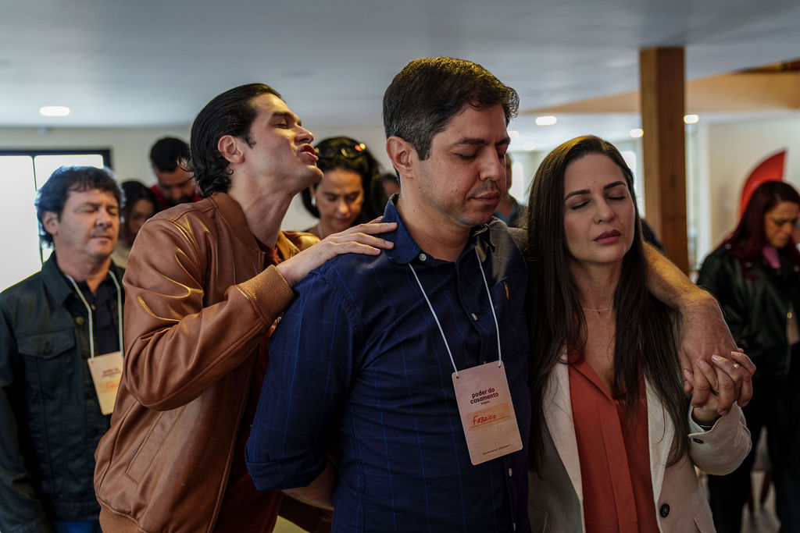
Datas
As duas últimas turmas de 2026
O retiro acontece a cada dois meses e as vagas se esgotam com antecedência. Casal que decide em cima da hora costuma ficar de fora e esperar dois meses.
| Turma | Datas | Local | |
|---|---|---|---|
| Novembro | Quinta 5 a sábado 7 | Campos do Jordão · SP | Quero essa |
| Dezembro | Quinta 3 a sábado 5 | Campos do Jordão · SP | Quero essa |
| Calendário 2027 | Uma turma a cada dois meses | Campos do Jordão · SP | Lista de espera aberta |
A chegada é na quinta a partir do meio da tarde e o encerramento é no sábado ao meio-dia. Muitos casais aproveitam e ficam mais uma noite na cidade por conta própria.
Está incluso
O que vocês recebem
e o que levam para casa
- ✓Hospedagem do casal nas duas noites, quinta e sexta
- ✓Café de boas-vindas na chegada e café da manhã dos dois dias
- ✓Jantar de quinta em rodízio de pizza
- ✓Noite do Fondue na sexta, com entradas e fondue doce
- ✓Oito encontros conduzidos pelo Pastor Lucas Albuquerque
- ✓Todas as dinâmicas do casal, com o material de cada uma
- ✓Kit de chegada e apostila do retiro
- ✓Cerimônia de renovação de votos com certificado emoldurado
- ✓Foto oficial do casal no painel do retiro
- ✓Equipe de apoio cuidando de cada detalhe dos três dias
- ✓Sigilo total: equipe e casais assinam compromisso de confidencialidade
- ✓Possibilidade de acesso ao grupo dos casais da turma, com acompanhamento depois
A pergunta que mais chega
E se um dos dois
ainda não quiser ir?
Essa é a mensagem que mais cai no nosso direct, e na maioria das vezes quem manda é a esposa. Então vamos ser diretos com você.
Cônjuge com dúvida é normal e resolve. Quase todo mundo que chega aqui tinha um dos dois em dúvida, e boa parte deles é quem mais chora no sábado. Existe um jeito de fazer esse convite que funciona e existe um jeito que fecha a porta. A equipe senta com você e te ajuda a fazer do primeiro jeito. Se fizer sentido, o Pastor Lucas grava um áudio direto para ele ou para ela.
Casal arrastado a gente não vende. Se um dos dois vai chegar fechado e contra a vontade, a gente prefere dizer isso antes e indicar um caminho mais leve para começar. Vaga de retiro é limitada e não serve para forçar ninguém.
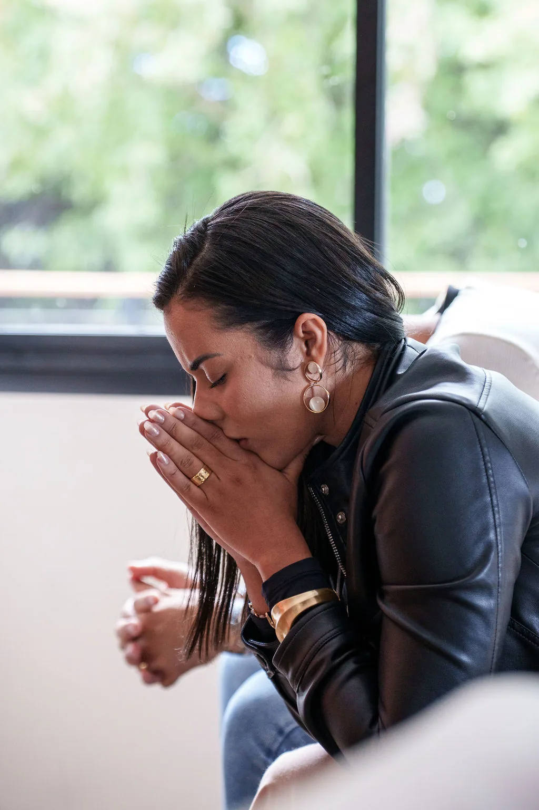
Vocês não vieram para um retiro. Vocês vieram para um reencontro com o propósito.
Abertura da quinta-feira
Investimento
Um valor por casal,
com tudo dentro
Quase ninguém nesse mercado publica preço. Aqui o valor está na página porque a gente acha que casal tomando uma decisão como essa merece saber quanto custa antes de entregar o telefone para alguém.
- Vocês falam com a equipe no WhatsApp e escolhem a turma
- A equipe confirma se ainda há vaga naquela data
- Pagamento no Pix ou no cartão, em nome do casal
- Vocês recebem a lista do que levar e a rota até a casa
- Na semana do retiro a equipe combina a chegada com vocês
- Se a turma lotar, vocês entram na lista da próxima
Perguntas
O que os casais
costumam perguntar
O nosso casamento está numa crise séria. Ainda faz sentido ir?
Faz, e é exatamente para isso que o retiro existe. Boa parte dos casais que chegam já tinha conversado sobre separação antes de comprar a vaga. O que a gente pede é que os dois venham por vontade própria, mesmo que um esteja mais convencido que o outro.
A gente está bem. Vale a pena mesmo assim?
Vale, e esses são os casais que mais aproveitam. Quem chega inteiro não gasta os três dias apagando incêndio, então consegue ir muito mais fundo na construção. Se você tivesse que escolher um momento para vir, seria agora e não depois que apertar.
Eu vou, mas tenho vergonha de falar da minha vida na frente dos outros.
Ninguém é obrigado a falar nada em público. Boa parte do trabalho acontece entre vocês dois, em silêncio, sem plateia. E o que se fala dentro do retiro não sai de lá: equipe e casais assinam compromisso de sigilo antes de começar.
Posso ir sozinho e trazer meu cônjuge na próxima?
Não. É um retiro de casais e todo o trabalho é feito a dois, das dinâmicas às cartas e à renovação de votos. Se o seu cônjuge ainda não topou, fale com a equipe. A gente te ajuda a fazer o convite e, se não for a hora, indica um caminho mais leve para começar.
Precisa ser cristão para participar?
Não precisa ser membro de igreja nenhuma. O retiro tem base bíblica e isso aparece o tempo todo, nas ministrações e nas orações, então é justo vocês saberem disso antes de decidir. Casais que não frequentam igreja participam de todas as edições e se sentem em casa.
Dá para levar os filhos?
Não. O retiro é só para os dois, e essa é uma das razões de ele funcionar. São três dias sem interrupção e, para muitos casais, é a primeira vez em anos que isso acontece. Vale combinar com avós ou com um casal amigo desde já, porque essa costuma ser a parte mais difícil de organizar.
Como é a hospedagem?
Casa de serra em Campos do Jordão, com quarto para cada casal e estrutura completa para as duas noites. A equipe manda as fotos e todos os detalhes do lugar assim que a reserva é confirmada.
O que a gente precisa levar?
Roupa confortável para os três dias, uma roupa mais bonita para a noite de sexta e outra para a cerimônia de sábado, agasalho, porque a serra esfria à noite, e a foto do casamento de vocês, que a equipe pede antes. A lista completa vai por WhatsApp depois da reserva.
Quais são as formas de pagamento?
Pix à vista ou em até 12 vezes no cartão de crédito. O parcelamento está sujeito aos juros da operadora do cartão, e a equipe passa as condições exatas antes de vocês fecharem. A reserva é confirmada com a entrada.
E se a gente não puder ir na data marcada?
Fale com a equipe o quanto antes. Até 30 dias antes do retiro, a vaga pode ser transferida para a turma seguinte sem custo. Depois disso a casa e a estrutura já estão contratadas em cima do número de casais, então a transferência é avaliada caso a caso.
Duas turmas, dezesseis casais cada
O melhor momento de ir
é antes de precisar.
Hoje à noite, no sofá de casa, vocês dois podem recomeçar.
Sete módulos com o Método Inquebrável do começo ao fim. Aulas curtas, feitas para o casal assistir junto, com uma conversa guiada entre vocês ao final de cada aula. Não precisa marcar nada com ninguém, não precisa contar para ninguém.
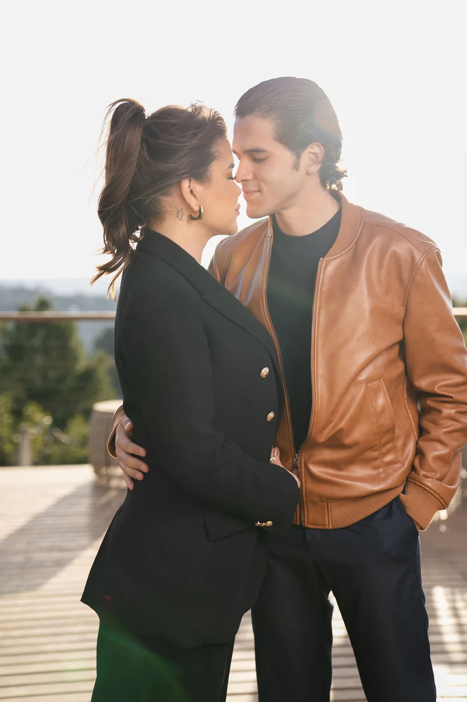
O que muda
Não é conteúdo para vocês acumularem. É conversa que vocês nunca tiveram.
A maior parte dos casais não precisa de mais informação sobre casamento. Precisa de alguém de fora conduzindo a conversa que os dois nunca conseguiram começar sozinhos. É isso que cada aula faz.
O Pastor Lucas ensina em poucos minutos, e aí vem a pergunta que vocês dois respondem ali mesmo, um olhando para o outro. É o mesmo método que sustenta o retiro e o Círculo da Aliança, no formato que cabe na vida real de quem trabalha, tem filho e chega em casa tarde.
Diagnóstico
Onde o casamento de vocês está de verdade, o que quebrou e quando. Inclui o exercício que a maior parte dos casais faz chorando.
Reconstrução
Cura das feridas, perdão de verdade, comunicação, os papéis dentro do casamento e a volta da intimidade.
Blindagem
O propósito de vocês como casal, os combinados para a próxima crise e o plano dos próximos anos escrito pelos dois.
Por que o curso funciona
Feito para assistir junto,
não para um contar para o outro depois.
Cabe na semana de vocês
Aula curta. Dá para fazer um módulo por semana depois que a casa dorme, sem virar mais uma obrigação na agenda.
Termina em ação, não em anotação
Toda aula acaba com uma pergunta que vocês respondem na hora, um para o outro. É ali que o curso começa a valer.
Ninguém precisa saber
É de casa, no seu ritmo e sem plateia. Muito casal começa por aqui justamente porque ainda não quer contar nada para ninguém.
- Sete módulos completos do Método Inquebrável
- Conversa guiada ao fim de cada aula
- Material de apoio para imprimir e preencher a dois
- Acesso pelo celular, pelo computador ou pela TV
- Sem mensalidade e sem prazo para terminar
O curso abre a conversa.
O retiro termina o trabalho.
Muito casal faz o curso primeiro e chega ao retiro já sabendo onde dói.
Tem problema que não se resolve num evento. Se resolve em processo.
Terapia de casal online com psicólogo especializado, com encontros individuais e em casal, conduzida dentro do mesmo Método Inquebrável que o retiro usa. Para quem precisa de alguém olhando só para a história de vocês.
Para quem é
Terapia não é sinal de que acabou. É sinal de que os dois ainda querem.
Muito casal espera a situação ficar insustentável para procurar ajuda. Quando finalmente procura, já gastou anos de energia discutindo o mesmo assunto e já machucou muito mais do que precisava.
O Protocolo Aliança existe para o casal que precisa de atendimento dedicado. Funciona sozinho e funciona ainda melhor depois do retiro, quando as feridas já foram abertas e precisam de acompanhamento.
Vocês brigam sempre pelo mesmo assunto, com as mesmas frases, e nunca sai do lugar.
Aconteceu algo grave e os dois querem continuar, mas não sabem como reconstruir a confiança.
Um dos dois carrega uma ferida de antes do casamento que está atrapalhando o casamento.
Vocês já tentaram conversar sozinhos muitas vezes e toda tentativa termina do mesmo jeito.
Como funciona
Online, com hora marcada,
com cuidado individual e em casal
Conversa inicial
Uma conversa com a equipe para entender o momento de vocês e confirmar se a terapia é o caminho certo agora. Sem custo e sem compromisso.
Sessões com o psicólogo
Um ciclo de 8 sessões online, entre encontros individuais e em casal, em dia e horário combinados com vocês, conduzidas por profissional especializado em casal.
Encaminhamento
Ao final do ciclo, a equipe conversa com vocês sobre os próximos passos, considerando o momento e as necessidades do casal. O retiro e o Círculo da Aliança são possibilidades para continuar essa jornada.
O programa inclui encontros individuais e em casal, com foco no cuidado da relação. Tudo o que é dito nas sessões é tratado com sigilo profissional.
A jornada de vocês
8 sessões para cuidar do casamento de vocês
Encontros individuais e em casal, organizados em seis etapas.
Diagnóstico profundo
Atendimento individual com cada um dos cônjuges e diagnóstico do casal.
Desbloqueio emocional
Com terapeuta: primeiro individualmente e depois com o casal junto.
Mentoria espiritual
Encontro com o pastor.
Plano de reconstrução conjugal
Direção para reconstruir a relação.
Reacendendo a paixão e a intimidade
Cuidado com a conexão e a intimidade do casal.
Alinhamento futuro e encerramento com propósito
Próximos passos para a vida a dois.
Total: 8 sessões, entre encontros individuais e em casal.
Investimento
Um ciclo, um valor
- Conversa inicial com a equipe, sem custo
- 8 sessões online, entre encontros individuais e em casal
- Condução dentro do Método Inquebrável
- Devolutiva do que foi trabalhado ao fim do ciclo
- Material de apoio para o casal usar entre as sessões
- Sigilo integral sobre tudo o que é dito
Não esperem quebrar
para procurar ajuda.
O retiro dura três dias. O casamento dura a vida inteira.
Doze meses de formação, acompanhamento terapêutico toda semana e uma sala de casais que não muda de gente. Para quem viveu o retiro e decidiu que não quer voltar para o piloto automático.
Por que existe
Todo casal volta do retiro decidido. O problema é o mês seguinte.
A rotina volta no primeiro dia útil. O trabalho volta, os filhos voltam, a agenda volta. E aquilo que vocês combinaram na serra vai sendo empurrado para a semana que vem, do mesmo jeito que a conversa importante era empurrada antes.
Quase todo evento para casais no Brasil termina no domingo à noite. O Círculo da Aliança existe justamente para o que vem depois: um ano inteiro com acompanhamento semanal, material para estudar em casa e outros casais fazendo o mesmo caminho junto com vocês.
No fim do ano tem formatura, certificação e comissionamento. Os casais formados viram casais líderes, servem nos retiros e podem abrir pequenos grupos de casais nas cidades deles.
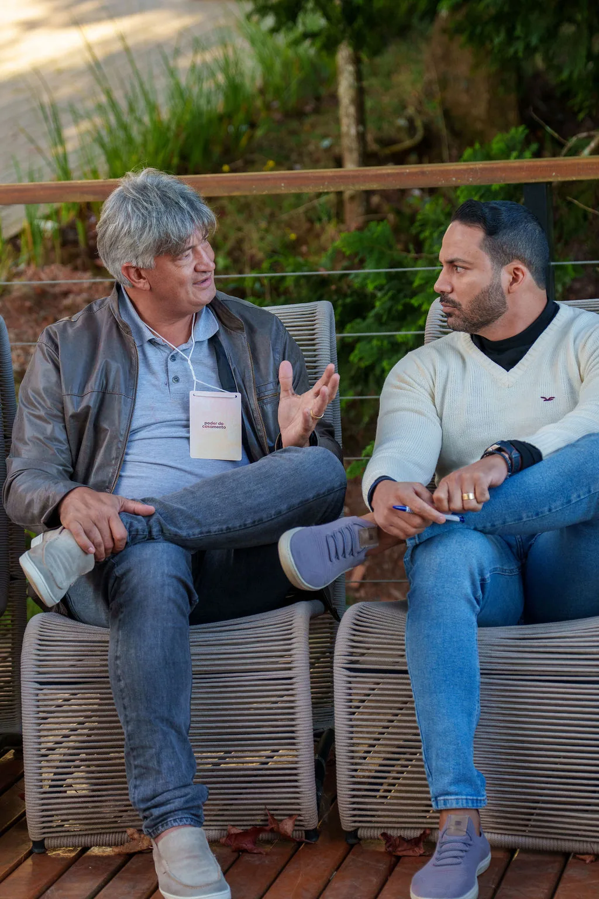
A jornada
Três fases dentro de um ano
A formação tem começo, meio e fim. Vocês entram no tema do mês em que chegaram e completam a volta inteira em doze meses, atravessando as três fases na ordem.
Curar o que ficou
Os primeiros meses tratam o que o retiro abriu. Mágoa antiga, perdão que não foi completo, ferida que ainda dói quando alguém toca. Com acompanhamento terapêutico toda semana.
Construir o novo
Comunicação, intimidade, dinheiro, filhos, família estendida e propósito do casal. É a fase em que o casamento para de ser remendado e passa a ser construído.
Levar para outros
Casal restaurado vira referência sem querer. Aqui vocês aprendem a atender outro casal, a conduzir um grupo pequeno e a servir nos retiros como casal líder.
Como funciona na prática
O que o ano entrega
- ✓Encontro ao vivo toda terça-feira à noite, conduzido pelo Pastor Lucas
- ✓Todas as aulas gravadas e liberadas depois, para quem não puder na hora
- ✓Acompanhamento terapêutico em grupo toda semana, dentro do encontro
- ✓Sessão dedicada com o terapeuta sempre que o casal precisar
- ✓Doze módulos mensais, com apostila própria para estudar em casa
- ✓Passaporte da Formação com doze selos, um por módulo concluído
- ✓Comunidade fechada dos casais do Círculo
- ✓Jantares presenciais do grupo ao longo do ano
- ✓Viagens de experiência com os casais do Círculo, abertas por temporada
- ✓Certificação e comissionamento na formatura de fim de ano
Todos os casais, de qualquer turma e de qualquer mês de entrada, ficam na mesma chamada semanal. Não existe turma paralela e existe uma única formatura por ano, no fim do ano. Quem termina antes espera e se forma junto com todo mundo.
Como se entra
A vaga é conversada,
não comprada num botão.
Antes de falar em investimento, a equipe precisa entender onde o casamento de vocês está e se este é o momento certo. Numa sala de doze meses, casal que entra na hora errada custa caro para ele mesmo e para o grupo.
- A participação é anual, válida por doze meses
- Não se entra mês a mês e não há saída no meio do ciclo
- Casal que não puder numa semana assiste a aula gravada depois
- O acompanhamento terapêutico é do casal, nunca individual
- O que se fala na sala não sai da sala
- O compromisso de um ano existe para o casal não desistir um do outro num mês difícil
Vocês já sabem o que fazer.
Agora é atravessar o ano.
A sala é pequena e fechada. Quem chega depois entra no módulo do mês.
Leve o Casamento Inquebrável para a sua igreja.
O método completo, o material das aulas e a formação dos casais que vão conduzir, para a sua igreja rodar o programa com o seu povo, com o seu nome à frente.
O problema que todo pastor conhece
Todo mundo sabe que precisa cuidar dos casais. Quase ninguém tem material para isso.
O ministério de casais da maioria das igrejas vive de um jantar por semestre e de um retiro por ano. Entre um e outro, o casal que está afundando não tem para onde ir, e o pastor atende como dá, sem processo e sem ninguém para dividir.
O que falta quase nunca é vontade. É um caminho pronto, com ordem, com material e com gente treinada para conduzir.
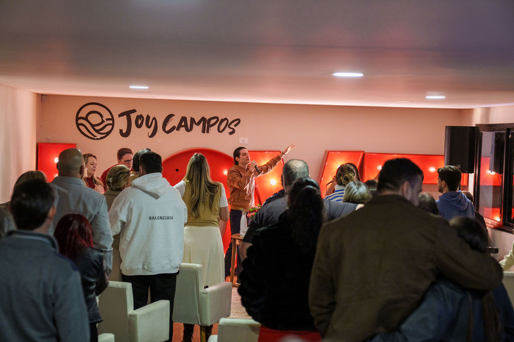
O que a sua igreja recebe
O método inteiro, pronto para rodar
O programa completo
As doze semanas do Casamento Inquebrável presencial, com roteiro de cada encontro, dinâmicas e o que fazer em cada etapa do Método Inquebrável.
O material dos casais
Apostila do participante e material de apoio para os casais levarem para casa e trabalharem durante a semana.
A formação dos líderes
Treinamento dos casais da sua igreja que vão conduzir as turmas, para o programa se multiplicar sem depender de ninguém de fora.
O programa já roda assim toda segunda-feira à noite na Igreja Simples Alphaville, em turmas pequenas, e cada turma forma os casais que vão ensinar a turma seguinte. É esse mesmo desenho que vai para a sua igreja.
Outras formas de trabalhar juntos
Três caminhos, conforme o tamanho do que você quer fazer
Programa licenciado
A sua igreja roda o Casamento Inquebrável com material próprio e casais formados por nós. O mais indicado para quem quer estrutura permanente.
Noite de casais na sua igreja
O Pastor Lucas vai até a sua cidade para uma noite com os casais da sua igreja, com palestra e um momento entre os casais.
Retiro em parceria
A sua igreja leva um grupo de casais para uma edição do retiro em Campos do Jordão, com condição e acompanhamento próprios.
Os casais da sua igreja
não podem esperar o próximo retiro.
Mande uma mensagem contando o tamanho da sua igreja e o que já existe hoje de ministério de casais. A equipe responde com o caminho que faz mais sentido.
Inquebrável
Como dois adultos imperfeitos constroem um casamento que o tempo, as crises e o mundo não conseguem desfazer. O novo livro de Lucas Albuquerque, pela Buzz Editora.
Sobre o livro
Ninguém casa pensando em chegar aqui. E quase todo mundo chega.
O livro conta histórias de verdade, começando pelas do próprio autor. A mudança do Maranhão para São Paulo, as noites chegando em casa depois das dez, o sofá onde os dois assistiam série no lugar de conversar, e o dia em que ele percebeu o tamanho do silêncio que tinha se instalado ali.
Depois vêm os casais que ele atendeu ao longo dos anos, com os mesmos padrões se repetindo em casas completamente diferentes. E, no meio de tudo isso, o método que ele usa hoje com casais no retiro, na terapia e no Círculo da Aliança.
É um livro para ler junto, marcado, com as páginas dobradas.
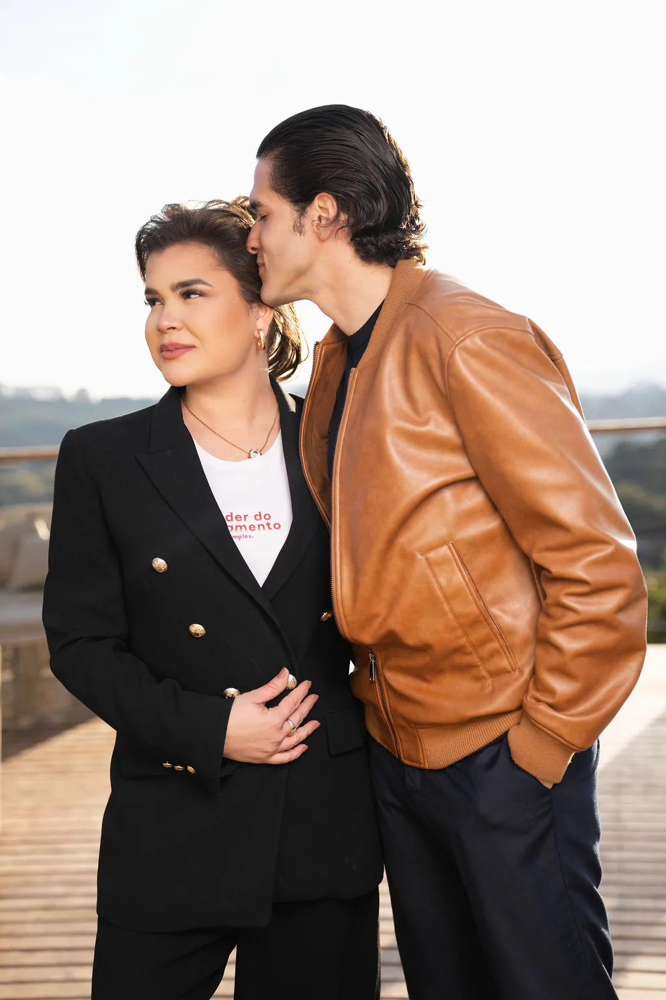
Uma pergunta do livro
"O que vocês fazem juntos que não é obrigação?"
Não vale pagar conta, criar filho, organizar a casa nem servir na igreja. É a pergunta que o autor faz em todo aconselhamento, e quase sempre os dois demoram para responder.
Quando a resposta não vem, não é porque o amor acabou. É porque a vida de vocês dois foi sendo ocupada pelas obrigações até não sobrar espaço para os momentos que vocês escolhem viver juntos.
Lançamento em novembro
Deixe o seu contato
e saiba antes de todo mundo.
Enquanto o livro não chega, o método já está rodando em Campos do Jordão.